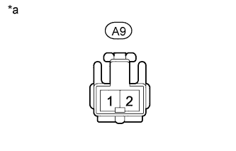
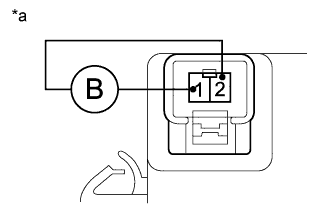

VEHICLE STABILITY CONTROL SYSTEM > Skid Control Buzzer Circuit |
| 1.PERFORM ACTIVE TEST USING INTELLIGENT TESTER (DSS SIGNAL BUZZER) |
Turn the engine switch off.
Connect the intelligent tester to the DLC3.
Turn the engine switch on (IG).
Turn the intelligent tester on.
Enter the following menus: Chassis / ABS/VSC/TRC / Active Test.
| Tester Display | Test Part | Control Range | Diagnostic Note |
| DSS Signal Buzzer | Skid control buzzer | Buzzer ON/OFF | The buzzer can be heard. |
Check that the skid control buzzer sounds/stops when turning the skid control buzzer on/off by using the intelligent tester.
| Result | Proceed to |
| Buzzer does not sound or sounds constantly | A |
| Buzzer sounds/stops | B |
|
| ||||
| A | |
| 2.CHECK TERMINAL VOLTAGE (IG1) |
Disconnect the A9 skid control buzzer connector.
|  |
Measure the voltage according to the value(s) in the table below.
| Tester Connection | Switch Condition | Specified Condition |
| A9-2 - Body ground | Engine switch on (IG) | 11 to 14 V |
| *a | Front view of wire harness connector (to Skid Control Buzzer) |
|
| ||||
| OK | |
| 3.INSPECT SKID CONTROL BUZZER |
Remove the skid control buzzer (Click here).
|  |
Apply battery voltage to the skid control buzzer, and check that the buzzer sounds.
| Measurement Condition | Specified Condition |
| Battery positive (+) voltage - Terminal 2 | Skid control buzzer sounds |
| Battery negative (-) voltage - Terminal 1 |
| *a | Component without harness connected (Skid Control Buzzer) |
|
| ||||
| OK | |
| 4.CHECK HARNESS AND CONNECTOR (SKID CONTROL BUZZER - SKID CONTROL ECU) |
Disconnect the A7 skid control ECU connector.
Disconnect the A9 skid control buzzer connector.
Measure the resistance according to the value(s) in the table below.
| Tester Connection | Condition | Specified Condition |
| A7-30 (BZ) - A9-1 | Always | Below 1 Ω |
| A7-30 (BZ) - Body ground | Always | 10 kΩ or higher |
|
| ||||
| OK | ||
| ||